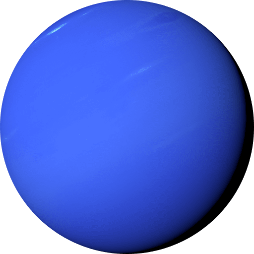

| Internal Planets |
External Planets |
बुध [Mercury]
| Moons |
0 |
| 1 Day |
59 Earth days |
| 1 Year |
88 Earth days |
| Mass |
3.30 x 1023 km |
| Diameter |
4,880 km |
-
Mercury is the smallest planet in our solar system.
-
Water ice exists in permanently shadowed craters near the poles.
|
बृहस्पति [Jupiter]
| Moons |
79 |
| 1 Day |
9.9 hours |
| 1 Year |
11.9 Earth years |
| Mass |
1.898 x 1027 kg |
| Diameter |
139,822 km |
-
Jupiter is the largest planet in our solar system.
-
Its atmosphere has cloud bands, fast jet streams, and intense storms.
|
शुक्र [Venus]
| Moons |
0 |
| 1 Day |
243 Earth days |
| 1 Year |
225 Earth days |
| Mass |
4.87 x 1024 kg |
| Diameter |
12,104 km |
-
Venus is often called Earth's 'sister planet' because of its similar size and composition.
-
Venus has a surface pressure about 92 times that of Earth, which pressure would crush most spacecraft within minutes.
|
(6)
शनि
शनि [Saturn]
| Moons |
83 |
| 1 Day |
10.7 hours |
| 1 Year |
29.5 Earth years |
| Mass |
5.683 x 1026 kg |
| Diameter |
116,464 km |
-
Saturn's iconic rings consist of countless ice and rock particles, creating a breathtaking sight.
-
Despite its size, Saturn is less dense than water, meaning it would float in a giant bathtub.
|
पृथ्वी [Earth]
| Moons |
1 |
| 1 Day |
24 hours |
| 1 Year |
365 days |
| Mass |
5.97 x 1024 kg |
| Diameter |
12,742 km |
-
Earth's oxygen-rich atmosphere is mainly the result of cyanobacteria's photosynthesis billions of years ago.
-
Earth's magnetic field shields it from harmful solar radiation, crucial for sustaining life.
|
अरुण [Uranus]
| Moons |
27 |
| 1 Day |
17.2 hours |
| 1 Year |
84 Earth years |
| Mass |
8.681 x 1025 kg |
| Diameter |
50,724 km |
-
Uranus rotates on its side with an axial tilt of about 98 degrees, unlike any other planet.
-
Uranus's blue-green color is due to methane in its atmosphere, which absorbs red light.
|
मंगल [Mars]
| Moons |
2 |
| 1 Day |
24.6 hours |
| 1 Year |
687 Earth days |
| Mass |
6.39 x 1023 kg |
| Diameter |
6,779 km |
-
Mars has the solar system's largest volcano, Olympus Mons, towering much higher than Mount Everest.
-
Mars experiences planet-wide dust storms that can last for months, obscuring its surface.
|
वरुण [Neptune]

| Moons |
14 |
| 1 Day |
16.1 hours |
| 1 Year |
164.8 Earth years |
| Mass |
1.024 x 1026 kg |
| Diameter |
49,244 km |
-
Neptune has the fastest winds in the solar system, reaching speeds up to 1,500 miles per hour.
-
Similar to Jupiter's Great Red Spot, Neptune has a rotating dark storm system that mystifies scientists.
|